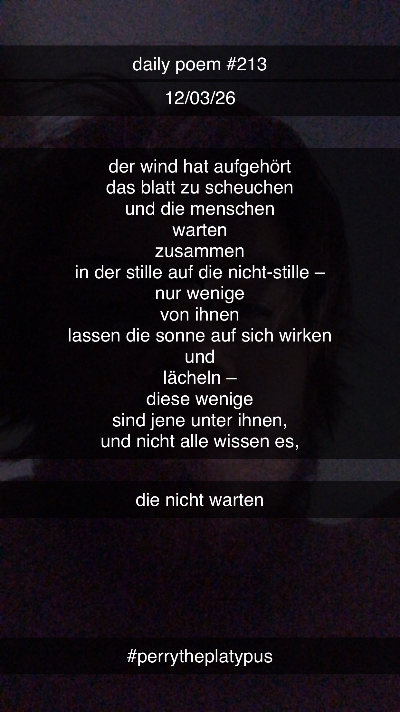

Warten
[213]Der Wind hat aufgehört
das Blatt zu scheuchen
und die Menschen
warten
zusammen
in der Stille auf die Nicht-Stille –
nur wenige
von ihnen
lassen die Sonne auf sich wirken
und
lächeln –
diese wenige
sind jene unter ihnen,
und nicht alle wissen es,
die nicht
warten.
